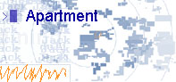

Presentations of information can respond dynamically to human interaction. To work in these terms requires:
- visual design and programming;
- conceptualizing the form of the information and transformations;
- sensing how human gestures will trigger visualization dynamics;
- understanding who the human is, and what s/he is doing.
reading: visual information seeking - tight coupling of dynamic query filters with starfield displays
[Christopher Ahlberg and Ben Shneiderman]
Proc ACM CHI 1994, 313-317.
This paper offers new principles for visual information
seeking (VIS). A key concept is to support browsing, which
is distinguished from familiar query composition and
information retrieval because of its emphasis on rapid
filtering to reduce result sets, progressive refinement of
search parameters, continuous reformulation of goals, and
visual scanning to identify results. VIS principles
developed include: dynamic query filters (query parameters
are rapidly adjusted with sliders, buttons, maps, etc.),
starfield displays (two-dimensional scatterplots to structure
tesult sets and zooming to reduce clutter), and tight coupling
(interrelating query components to preserve display
invariants and support progressive refinement combined
with an emphasis on using search output to foster search
input). A FilmFinder prototype using a movie database
demonstrates these principles in a VIS environment.
reading: data visualization sliders [Stephen G. Eick]
Proc ACM UIST 1994, 119-120.
Comuter sliders are a generic user input mechanism for specifying a numeric value from a range. For data visualization, the effectiveness of sliders may be increased by using the space inside the slider as an interactive color scale, a barplot for discrete data, and a density plot for continuous data.The idea is to show the selected values in relation to the data and its distribution. Furthermore, the selection mechanism may be generalized using a painting metaphor to specify arbitrary, disconnected intervals while maintaining an intuitive user-interface.
reading: Enhanced
dynamic queries via movable filters
[Ken
Fishkin and Maureen C. Stone]
Proc ACM CHI 1995, 415-420.
Traditional database query systems allow users to construct complicated database queries from specialized database language
primitives. While powerful and expressive, such systems are not easy to use, especially for browsing or exploring the data.
Information visualization systems address this problem by providing graphical presentations of the data and direct
manipulation tools for exploring the data. Recent work has reported the value of dynamic queries coupled with
two-dimensional data representations for progressive refinement of user queries. However, the queries generated by these
systems are limited to conjunctions of global ranges of parameter values. In this paper, we extend dynamic queries by
encoding each operand of the query as a Magic Lens filter. Compound queries can be constructed by overlapping the lenses.
Each lens includes a slider and a set of buttons to control the value of the filter function and to define the composition
operation generated by overlapping the lenses. We demonstrate a system that supports multiple, simultaneous, general,
real-valued queries on databases with incomplete data, while maintaining the simple visual interface of dynamic query
systems.
example : news
map
[Marcos Weskamp]
Newsmap depicts the permanently changing map of Google news.
The treemaps visualization algorithm of Shneiderman and Wattenberg
is employed.
The visualization gives users a quick overview of breaking
international news, in which the area of a topic dennotes the number
of stories devoted to it. Stories can be filtered by country or origin,
news category, and recency.
example : map
of the market
[Martin Wattenberg]
A 2-dimensional visualization method, capable of
presenting detailed information on hundreds of items while emphasizing
overall patterns in the data. This display method, which builds on
Shneiderman's treemap technique, makes use of both hierarchy and
similarity information. We have implemented this display in the
SmartMoney Map of the Market, a web page that reports current data on
reading:
Ben Shneiderman, A History of Treemap Research,
An account of versions of the treemap algorithm, including what they
were applied to, who developed them, and when. With links to relevant
technical articles that detail how the algorithms work.

example : Apartment
[Marek Walczak and Martin Wattenberg]
A project where people build virtual spaces to live in;
where your words build worlds, and sentence structure lays the
foundation of the Apartment. The apartments people have built are
available as a collection, which functions as a social space.